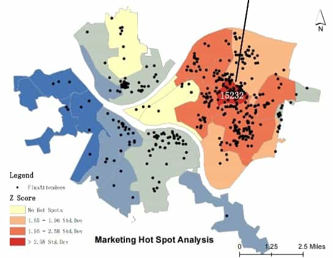

event venue
FLUX is an acclaimed annual art event in Pittsburgh, Pennsylvania, that highlights emerging artists. This year, faced with budget cuts, the event organizers have hired a marketing analyst to efficiently target potential attendees using limited data on past participation.
The analyst's task is to analyze spatial data to find where previous attendees live, identifying clusters for focused marketing and at least one zip code for concentrated outreach. Additionally, the analyst may suggest a suitable location for the next event. This approach uses geocoding, cluster analysis, and hot spot analysis to overcome budget constraints and maintain the event's high standard.